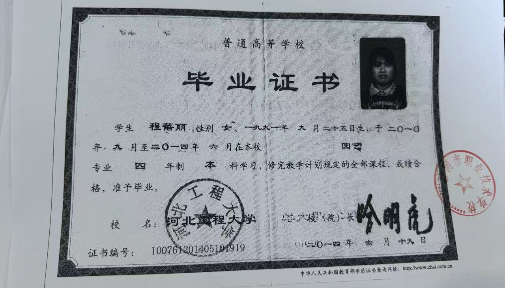
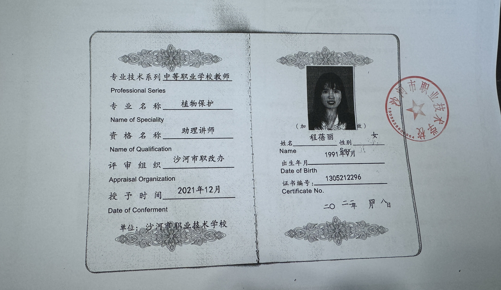
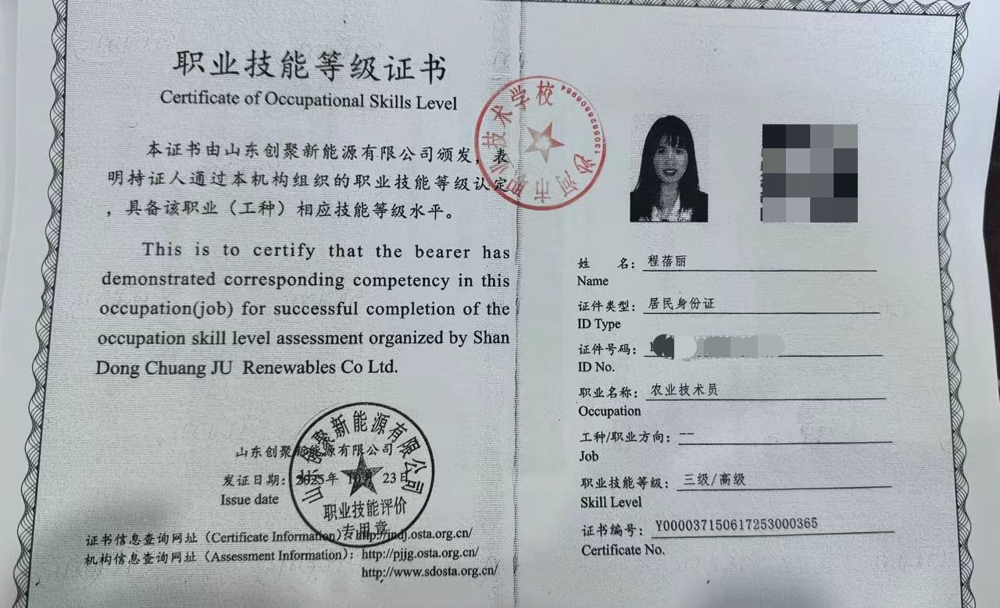
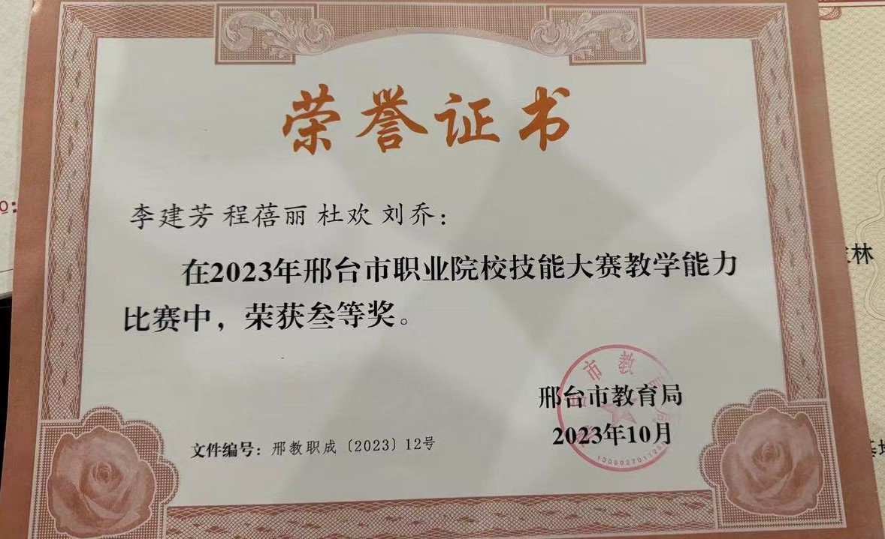

班
班主任工作
担任 2026 级作物生产技术班班主任，全身心投入班级事务。坚持从爱出发，尊重与严格并重，班级氛围融洽，多次获得流动红旗。
以真实档案材料为支撑，呈现一名农林职教人的成长轨迹与岗位担当。
担任 2026 级作物生产技术班班主任，全身心投入班级事务。坚持从爱出发，尊重与严格并重，班级氛围融洽，多次获得流动红旗。
承担植物科学基础专业课教学，坚持以学生为本，把学科知识讲清楚、练到位，激发学习兴趣，帮助学生在各自擅长的领域表现优秀。
指导学生参加技能大赛并获奖，以赛促学、以赛促教，把竞赛标准融入日常训练，帮助学生打牢职业技能根基。
2026 级作物生产技术班 · 植物科学基础 · 以学生为本，从爱出发。
程蓓丽老师，现担任 2026 级作物生产技术班班主任，兼 植物科学基础专业课教学工作。在工作期间，能够全身心投入班级事务以及教育教学中， 始终坚持以学生为本的教学核心，坚持从爱出发，尊重学生与严格要求学生相结合， 对于缺点较多的孩子经常面对面谈心。
任教的班级氛围融洽，学习兴趣高，同学们成绩优异，在各自擅长的领域表现优秀。 学生在卫生、纪律、文明三方面积极表现，屡次获得流动红旗， 得到了校领导、同事及家长的一致认可。
班级事务与课堂教学并重，把时间和精力真正放在学生身上。
既保护学生自尊，又守住纪律底线，让规则与温度同时在场。
对成长较慢、缺点较多的孩子不放弃，用个别谈话找到改变的切口。
鼓励学生在各自擅长的领域发光，让班级成为多元成长的土壤。
「教师」与「技师」双向达标：具备教育教学能力，同时拥有行业认可的职业技能等级与实践指导经验。
持有教师资格证与助理讲师职称，完成系统师范与职教能力训练；在市级教学能力比赛中获奖，教学设计与课堂实施获同行认可。
拥有职业技能等级证书及可核验查询记录，专业背景覆盖园艺与植物保护；在技能训练与学生竞赛指导中持续沉淀行业实践经验。
河北工程大学园艺专业本科毕业（2010—2014），为农林职教提供扎实的学科支撑，便于将前沿农艺知识转化为可教、可练、可评的课堂内容。
2023 年邢台市职业院校技能大赛教学能力比赛获三等奖；同时指导学生技能竞赛并留有获奖影像，形成「教师参赛 + 学生获奖」双向成果闭环。
本页材料按「学历资格 → 教师资格/职称 → 职业技能等级 → 教学与竞赛成果」链条组织， 便于评审快速核验「会教」与「会做」两方面证据。身份证件用于材料真实性核验，已脱敏展示。
点击卡片可放大预览。筛选分类便于按双师评价维度查阅。
从学历奠基到职称评聘，从技能取证到赛课带赛，形成持续成长时间线。
完成普通高等教育本科学习，获毕业证书，奠定农林专业学科基础，为后续职教教学与技能指导提供专业支撑。

经沙河市职改办评审，取得中等职业学校教师系列助理讲师资格，专业名称为植物保护，服务于农林相关专业教学。

取得职业技能等级证书，并保留官方查询截图，保证证书真实性可追溯，满足双师型「技能侧」评价要求。

在 2023 年邢台市职业院校技能大赛教学能力比赛中获三等奖（邢台市教育局），体现教学设计与课堂实施综合能力。

本页面为双师型教师评价展示案例，材料均来自本人真实档案扫描件。
2026 级作物生产技术班班主任，兼植物科学基础专业课教师。如需核验证书原件或补充材料，请通过学校教务或人事渠道联系。
“始终坚持以学生为本，从爱出发。尊重与严格并重，让每一个孩子都被看见、被要求、被成就。
— 程蓓丽